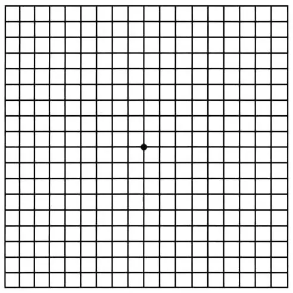
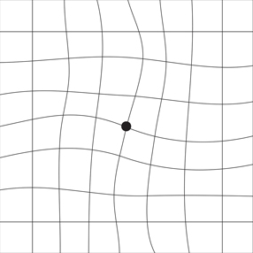

Vamos a ver qué tal ves
Tienes dos opciones: jugar con las letras o hacerte una revisión rápida. Tú eliges.
Si prefieres la revisión, haz las pruebas en orden y registra tus respuestas en cada una. Al final verás un resumen orientativo. Ten en cuenta que no sustituye a una revisión de un profesional en consulta.
Test de agudeza visual
Si quieres jugar, escribe en la primera fila del optotipo y cambia la letra, el tamaño y el grosor con el mando.
Si quieres que la prueba sea más o menos fiable, sigue estas instrucciones:
- Pon el navegador en pantalla completa. Lo ideal es una pantalla de unas 21 pulgadas.
- Deja los controles de tamaño y grosor en sus valores iniciales.
- Aléjate unos 50 centímetros de la pantalla: extiende el brazo y toca la pantalla con la punta de los dedos. No hagas trampa, que te veo.
- Registra tus resultados de cada ojo en las fichas que están debajo del optotipo.
px
- E F P T O 0,1
¿Hasta dónde llegas?
Primero cada ojo por separado y luego los dos juntos, como en la consulta.
Tápate el ojo izquierdo con la palma de la mano, sin apretar y sin guiñarlo.
Ahora tápate el ojo derecho, también con la palma, sin apretar y sin guiñarlo.
Por último, con los dos ojos abiertos, sin tapar ni guiñar ninguno.
Este test es orientativo y no sustituye una revisión visual.
Test duocromo
Esta prueba da una pista orientativa de si podrías ser miope o hipermétrope.
Sigue estas instrucciones:
- Pon el navegador en pantalla completa. Lo ideal es una pantalla de unas 21 pulgadas.
- Aléjate unos 50 centímetros de la pantalla: extiende el brazo y toca la pantalla con la punta de los dedos.
- Fíjate en qué fondo ves la palabra «HOLA» más negra y nítida, con más contraste.
- Apunta lo que ves con cada ojo en las fichas de debajo.
Tápate el ojo izquierdo con la palma de la mano, sin apretar y sin guiñarlo.
Ahora tápate el ojo derecho, también con la palma, sin apretar y sin guiñarlo.
Rejilla de Amsler
Con este último test vamos a buscar alteraciones en la mácula, la zona central de la retina. Sirve para detectar a tiempo la degeneración macular asociada a la edad (DMAE), una de las principales causas de ceguera en mayores de 50 años. Al principio no da síntomas y, cuando se pierde visión, esa pérdida es irreversible.
Sigue estas instrucciones:
- Pon el navegador en pantalla completa. Lo ideal es una pantalla de unas 21 pulgadas.
- Aléjate unos 30 o 40 centímetros de la pantalla: una distancia de lectura normal.
- Si usas gafas de cerca (de leer), póntelas para hacer la prueba.
- Con cada ojo por separado, mira fijamente el punto del centro de la cuadrícula, sin mover los ojos, y fíjate en el resto de la cuadrícula sin dejar de mirar el punto.
- Apunta lo que ves con cada ojo en las fichas de debajo.

Ver cómo se vería con una alteración

Si con alguno de los dos ojos no ves rectas las líneas, faltan trozos o ves manchas, acude a una óptica o a un centro especializado para que te lo evalúen con más precisión.
Tápate el ojo izquierdo con la palma de la mano, sin apretar y sin guiñarlo.
Ahora tápate el ojo derecho, también con la palma, sin apretar y sin guiñarlo.
Tu resultado
Este resumen es orientativo y no es un diagnóstico. Si algo te preocupa, pide cita con un profesional.
Ópticas cerca de ti
Busca a partir de tu ubicación o escribe un código postal o una dirección.